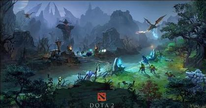

作者：Marc Laidlaw 译者：河马维克(HippoVic)
混元初开，天地未分之际，初生的世界就迎来了一个诡异的伴星——一颗如同水晶般透明的星球，被后人称为“癫狂之月”。这颗看上去很小的星球蕴含着狂暴的 光芒力量--目睹这力量的人让人感觉似乎是亲眼见证了神的交战，它发出的光芒如此之强，以至于白昼时候的阳光也要逊色三分。而癫狂之月并非一颗安分稳定的 星球。与其说他是一个星球，不如说是一个囚牢。里面囚禁着俩个争斗了千万年的远古智慧，创世者厌倦了他这俩个子民无休止的争斗，于是降下天罚，把这两个远古智慧关押在一个异能水晶所制成的球体内，让他们永世争斗，永世坠落。这个不详的囚笼在空间中漂浮了无数个世纪，最后，被我们这个可怜的世界的引力所捕获。
在癫狂之月的照耀下，原始的社会文明时代更迭，而无数的哲人和智者也毕生注视着这一奇怪的星体，用自己的想象力和悠闲地认知能力来解释这一现象。而在同时，天体间的轨道应力和潮汐力带来的裂隙，也让癫狂之月的“囚犯”们开始密谋逃离，一开始那些裂隙还只是细微的，然而随着里面的力量不停的冲撞，裂隙开始 蔓延，从最细微的裂痕，演变成了成千上万道庞大的沟壑，并不时因为里面的能量而发出妖艳的红光。
终于，在被称为“殇月之夜”的晚上，癫狂之月分崩离析。绝大多数形体碎片散入空间中，燃烧殆尽。然而，还是有一些碎片降落在地上，有的熔化了，有的虽然破碎了，但是包流量最初的晶体状。碎片安静的在地上躺着。岁月变迁，终于，大地从灭顶之灾中缓慢的恢复，而这次史前大灾难的幸存者们也逐渐的生息繁衍，传承文明。到后来，癫狂之月已经逐渐成为了一个遥不可及的幻梦，而殇月之夜，也成为了一个传说。
陨落的远古物质碎片在落地以后，逐渐恢复了其最原始的本源力量：天辉和夜魇。由于纯净的力量无比强大，俩种碎片释放出的能量也是独特且巨大的。而那些在碎片周围定居的人们则逐渐的开始吸取这俩种力量，先是为己所用，可是到了后来，他们已经离不开这种天赐之力了。更为讽刺的是，他们在碎片四周修了神龛，并称其为“远古遗迹”，作为神灵，时代敬畏和膜拜。

秀逗魔导士莉娜和她妹妹水晶室女莉莱从小就合不来，她们从童年开始就你来我往的争斗成为了当地人津津乐道的传奇故事。莉娜总是占上风，如果说水晶室女的天性纯良而诚实，那么莉娜则是火爆中带着放纵和聪慧。在两人分别用冰和火毁掉了一大半房子以后，她们气急败坏的父母终于意识到两人必须分开。作为姐姐，莉娜被送到了遥远的南方，纷争之国的燃烧沙漠，和她有耐心的姑妈一起生活，这里的气候对这位火爆的魔导士来说其实更舒服。她的到来让一潭死水的当地泛起了不小的涟漪，许多男人试图追求她，最后却拖着烧焦的手指头或者只剩半边的眉毛以及被摧毁自信心狼狈离开。莉娜非常自信，没有任何事物能抑制她的火焰。
| 名次/时间 | ti1(2011) | ti2(2012) | ti3(2013) | ti4(2014) | ti5(2015) |
| 第一名 | Na`Vi（乌克兰） | IG（中国） | Aliance（瑞典） | Neebee（中国） | EG（美国） |
| 第二名 | Ehome（中国） | Na`Vi（乌克兰） | Na`Vi（乌克兰） | VG（中国） | CDEC（中国） |
| 第三名 | Scythe.SG（欧洲） | LGD（中国） | orange（马来西亚） | EG（美国） | LGD（中国） |